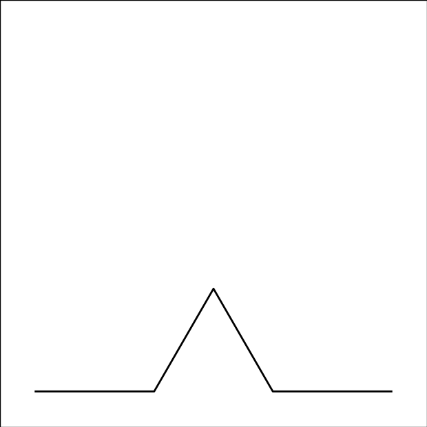

Instructions
Please read these instructions carefully. You will be quizzed on their content before the experiment begins.
In this HIT, you will make a series of 24 judgments. Each judgment introduces a new type of "alien crystal" that has infected a surface. The crystal has been growing for some time, and your task is to predict what it will look like as it continues to grow. An example crystal is shown below.
| Before infection |
→ | Step 1  |
→ | Step 2
|
You can roll your mouse over an image to "zoom" (Please try it now!). This is necessary for certain crystals with intricate detail.
You will not receive any feedback after each judgment. The judgments may feel difficult but please try to choose the best answer.